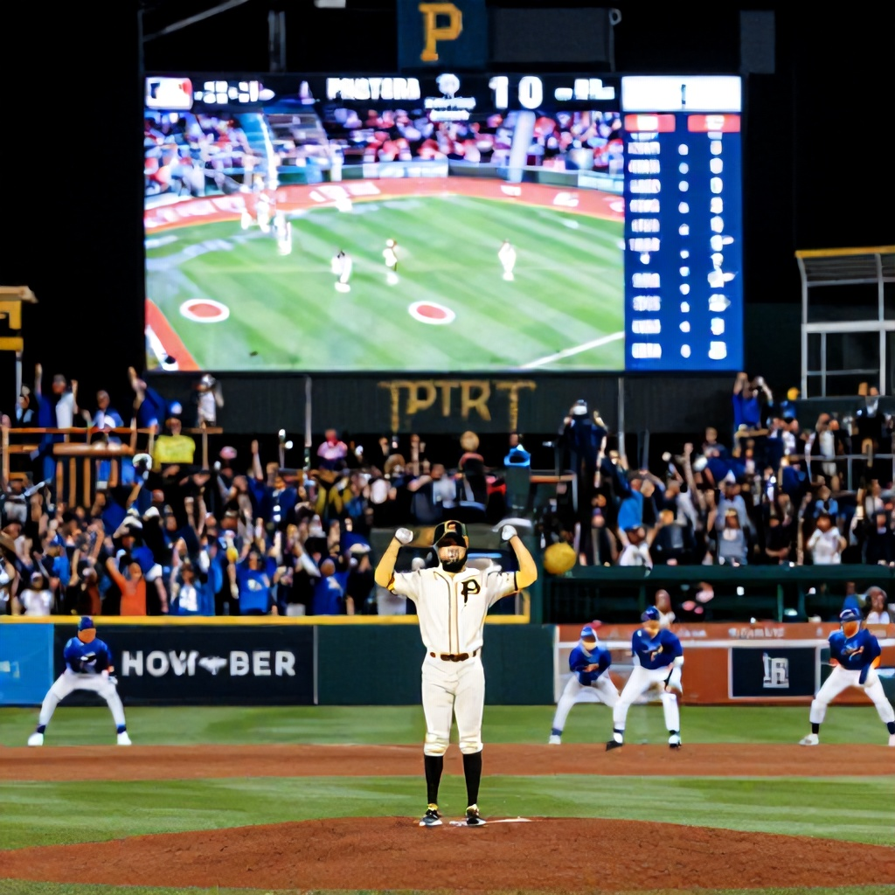

The Pittsburgh Pirates face off against the Los Angeles Dodgers in a matchup that promises excitement and high-scoring potential. With the Pirates sitting at a modest +220 moneyline and the Dodgers at -125, the betting market reflects a significant edge for the home team. However, the real story lies in the run line and over/under totals that offer compelling angles for bettors.
Starting Pitchers and Matchup Dynamics
The Pirates’ starting pitcher is expected to face a potent Dodgers lineup known for its high-powered offense. The Dodgers' offensive capabilities are evident in their recent performance metrics—especially their ability to generate runs in favorable environments. The Pirates, despite being underdogs, have shown resilience in recent outings and are playing at a neutral venue where their pitching staff can compete.
Run Line and Total Analysis
The run line shows a spread of +1 for the Pirates and -1 for the Dodgers, with both sides priced at -112 and -147 respectively. This indicates a close contest, but with slight favoritism toward the Dodgers. However, the over/under line stands at 9.5 runs, which is quite high for this particular matchup. Both teams have demonstrated an ability to score consistently, particularly in the past few games.
Key Betting Angle: Over 9.5 Runs
With the total set at 9.5 runs, the over presents a strong value play. The Pirates' pitching staff has been shaky lately, especially against elite offenses like the Dodgers. Meanwhile, the Dodgers' lineup features several players who have posted impressive offensive numbers this season—including a .320 batting average and 1.150 OPS in recent games.
Given these dynamics, we recommend taking the over 9.5 runs at even money. The Pirates' rotation has struggled to contain power hitters, while the Dodgers' ability to score runs in clutch situations makes this a high-scoring affair.
Conclusion
While the Pirates are listed as underdogs, the betting landscape suggests a competitive game with plenty of scoring opportunities. The over 9.5 runs is a smart play based on recent offensive output and defensive vulnerabilities. Keep an eye on how the starting pitchers perform, as their effectiveness could sway the outcome significantly.
Recommended Bet: Over 9.5 Runs (-110)
Source: Sports Select